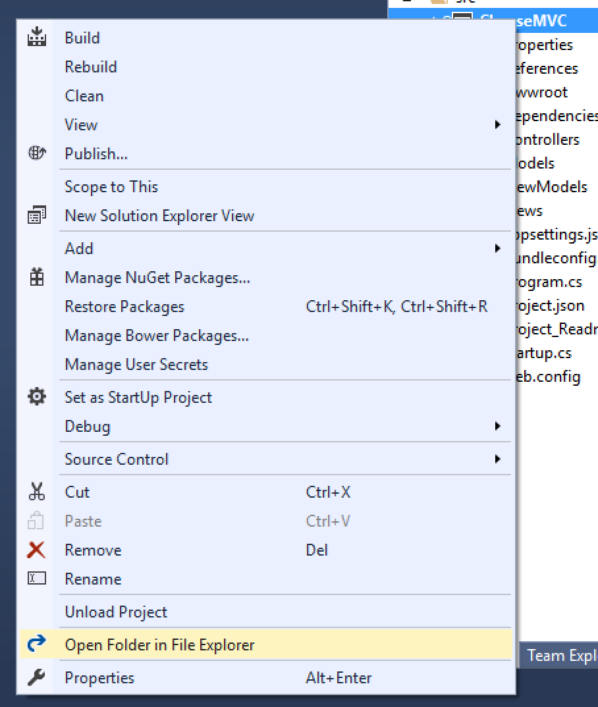

Studio: CheeseMVC Persistent
Part 1: Persisting a Single Class
Be sure you've completed the setup steps before starting these tasks.
If you get stuck on any of the steps here refer to the video lessons. You'll often find the answers there.
Setting Up the New Model
We'll use EntityFrameworkCore to create an object-relational mapping for a new class.
In Models/, create a new model class named CheeseCategory. Give it an ID property and a Name property that's a string.
We'll want instances of this class to be stored in the database, so open up Data\CheeseDbContext and add a new DbSet:
public DbSet<CheeseCategory> Categories { get; set; }Since Cheese and CheeseCategory will be related (we'll set this up in Part 2 of this studio), we can put these DbSet properties in the same DbContext.
By naming this property Categories, EF will create a table within our database of the same name.
Adding Categories
Create a CategoryController in Controllers\, and add the following code to the class:
private readonly CheeseDbContext context;
public CategoryController(CheeseDbContext dbContext)
{
context = dbContext;
}This creates a private field context of type CheeseDbContext. This object will be the mechanism with which we interact with objects stored in the database. The MVC framework will do the work of creating an instance of CheeseDbContext and passing it into our controller's constructor.
This code would need to be added to each controller class that you want to have access to the persistent collections defined within CheeseDbContext.
View All Categories
Create an Index action within CategoryController, and the corresponding view template within the Views folder. You'll need to create Views\Category\ yourself before creating the template file.
The Index action should retrieve the list of all categories. This is done via the context object: context.Categories.ToList() returns a list of all CheeseCategory objects managed by CheeseDbContext. Use this snippet to retrieve the list of categories, and then pass the list into the view.
Your view should display an unordered list (that is, a <ul>) of category names. The list will look a bit plain for now, but we will make it more interesting later on.
Add Categories
Next, we want to enable the user to create a new category via a form. This will require multiple steps.
AddCategoryViewModel
Create a new ViewModel, AddCategoryViewModel. A category thus far consists of only a name and an ID, so this ViewModel will be simple. It should have a Name property along with validation attributes to make the property required, along with [Display(Name = "Category Name")]. We don't need to worry about an ID property here because the ID will be generated for us when we store a new object in the database.
Add View
In Views\Category\ create a new template, Add.cshtml. Within the template, create a form that renders a form using the ViewModel. Thus, you'll need to add at the top of the file:
@model CheeseMVC.ViewModels.AddCategoryViewModelBe sure to use your tag helpers to render the form:
- On the
<form>element:asp-controllerandasp-action(our form shouldPOSTto theAddaction of theCategorycontroller). - Within the form:
asp-for(on<input>and<label>) andasp-validation-for(on a<span>).
This is the same technique we've been using over the last couple of weeks.
Add Action Methods
The last pieces of this puzzle are the controller actions to render and process the form.
Create an Add action within CategoryController that creates an AddCategoryViewModel and passes it into the view.
Create another Add action that has the [HttpPost] attribute, and has an instance of AddCategoryViewModel as a parameter, to be created and passed in via model binding.
Within this second Add action:
- Check that the ViewModel is valid. If not, return the view, passing the ViewModel into the view as you do so.
- If it is valid:
- Create a new
CheeseCategoryobject,newCategory, withNameproperty having the value ofNamefrom the ViewModel. - Add
newCategoryto the database context:context.Categories.Add(newCategory) - Save changes to the database:
context.SaveChanges() - Redirect to the
Indexaction forCategoryController:return Redirect("/Category")
- Create a new
Adding Navigation Links
Let's make it easy to navigate to the new views that we've created.
Within Views\Category\Index.cshtml, add the following link below the <ul> that you added earlier:
<p><a asp-controller="Category" asp-action="Add">Add Category</a></p>And within Views\Shared\_Layout.cshtml, add the following link inside of the <ul class="nav navbar-nav"> element:
<li><a asp-controller="Category" asp-action="Index">Categories</a></li>Creating and Running the Migration
You're done coding for this portion of the studio, but you are note quite ready to run the application. Before we do that, we need to create a migration to apply our model changes to the database.
To create a new migration after making changes to your model, right-click on the project in the Solution Explorer and select Open Folder in File Explorer.
This opens File Explorer to the top-level directory of the project.
Within the File Explorer window, click on the far-right end of the Location field, and type cmd. Hit Enter.

This opens a command prompt with the path already set to the project directory. From this location, you can run .NET Tools commands.
Create your migration:
> dotnet ef migrations add AddCategoryThis will create a new migration file in Migrations\ within your project. Before doing so, however, it will build your project. If you encounter build errors, return to Visual Studio and fix them.
Next, apply the migration to the database:
> dotnet ef database updateYou can see the result of running this migration by moving back to Visual Studio, opening View > SQL Server Object Explorer and navigating down to the database as shown below. Note that your database for this project is named CheeseMVC-persistent so that it doesn't conflict with any similarly-named databases that you may already have created.
What's the change that you're looking for? Well, that Categories table looks new, doesn't it? And if you right-click on the new table and select View Data you'll see an empty table with ID and Name columns.
Test!
Start up your application, and try to add a new category!
Click on Categories in the main navigation bar, then on Add Category. Complete the form, and if everything works as expected, you'll see your new category in the list. If everything seems to work - that is, you are able to submit the form without any errors - but you don't see your category in the list, here's what you should check:
- Is there any data in the
Categoriestable? Use SQL Server Object Explorer to check. If not, make sure you're callingcontext.SaveChanges()upon form submission, after creating the newCheeseCategoryinstance. - If there's data in the database, check that you are correctly querying for the list of all categories in
CategoryController.Index:context.Categories.ToList(). - Ensure you're passing this list into the view, and looping over the list of categories to display them in the page.
When everything works, move on to Part 2.